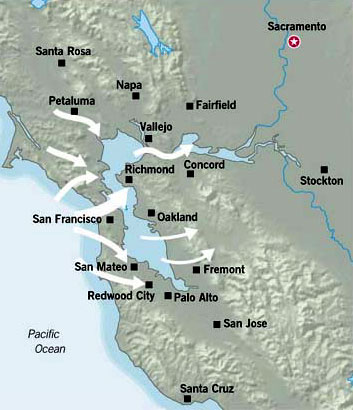
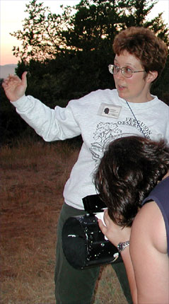

Now is a great time of the year to learn about our wacky weather and weird San Francisco Bay Area micro climates. The famous blue-legged tourist arrives in the region in droves just as our weather becomes really interesting. This species is easy to spot because of its unusual plumage. The head sports a protective seasonal cap, which quickly blows away in the fierce wind, leaving the usually sparse natural plumage bare to the ravages of the elements. The flimsy outer wear favored by the species is useless for protection, and thererfore the extremities sport a range of unnatural colors - from red peeling sunburnt shoulders to goose-bumped wind-whipped blue legs. These color variations can both be seen on the same day in different parts of San Francisco, much to the enjoyment of the local species!
|  |
I could see the fog cascading over Mount Tamalpais to the southwest, and the hills over to the west had foggy whitecaps on their gently rounded peaks. I turned from the window, picked up the booklet, and settled in for a nice long read. The booklet was fascinating. There have been some subtle changes to the weather in the past 40 years; most importantly, we know more about the El Ni¤o and La Ni¤a ocean-warming and cooling phenomenon, but the basics haven't changed too much. Here are the basics from the booklet.
We can blame our weather on two mountain ranges, a river system and a big thaw. The Sierra Nevada mountain range rises 14,000 feet 200 miles inland from the shore of the Pacific Ocean. This hunk of granite intercepts the clouds and moisture laden clouds drifting eastward from the ocean. It forces the clouds to drop their burden on the mountain slopes in the form of rain and snow.
The spring thaw cascaded into ancient lakes, down creeks, waterfalls, streams and rivers. This volume of water sliced through the coast range to the sea, carving the Carquinez Strait and the Golden Gate long before San Francisco Bay was formed. A breach in the Coast Range has created a meeting place for continental and ocean air masses. The Coast Ranges themselves are divided into sub-ranges, each with its own hill-and-valley topography, creating more modifications to the basic weather and climate patterns.
Through the funnel of the Golden Gate and San Francisco Bay, the aerial forces of sea and land wage war. The battle line zigzags through the streets of San Francisco and extends in similar erratic fashion across the region. So what are we stargazers and astronomers alike to do? A better understanding of our natural air conditioning system will not make the bay area fog and clouds go away, but at least you'll be armed with knowledge. Now isn't that comforting?
The reason for the foggy zigzags is the complex topography of the Coast Range. It modifies the basic struggle between air masses of land and sea. The Coast Range in our region is a double chain of mountains running north and south - actually north-northwest and south-southeast. Between these two mountain chains lie the basin of the San Francisco Bay with the Petaluma Valley to the north and the Santa Clara Valley to the south. The western range consists of the Santa Cruz Mountains south of the Golden Gate and the Marin Hills, including Mount Tamalpais, to the north. The eastern part of the Coast Range is divided into two main chains. The Berkeley Hills are to the immediate east of the bay and beyond the Livermore and San Ramon valleys are the higher Diablo Range. It gets even more divided north of the bay by the Sonoma, Mayacama and Vaca mountains.
The pattern is also modified by large bodies of water which tend to cool their shores in the summer and warm them in the winter. The most important of these is the San Francisco Bay itself, and its various subdivisions and tributaries, including the San Pablo Bay, Suisun Bay, and the Delta. The Delta is where the major rivers of the Sierra and the Central Valley meet in an intricate network of watercourses and low islands. These geographical complexities form the land and lead to innumerable micro climates within the region - micro climates which vary from mountain to mountain, from valley to valley, and from point to point within these mountains and valleys.
The ocean of atmosphere that surrounds the earth bears down on the earth's surface. Warm air is light and rises and cold air is heavy and descends. Because cold air presses down more heavily on the earth's surface than warm air, a cold region is a relatively high pressure area; a warm region, a low pressure area. Just as water tends to seek its own level, so air tends to equalize the pressure. Air moves from a high pressure area to a low pressure area. Winds blow from a cool to a warm place. When air rises, it expands and cools. When air descends, it compresses and grows warmer at about the same rate. Warm air is able to hold more moisture (in vapor form) than cool air. If warm damp air begins to cool off, it will reach a point where it can no longer contain its watery load and the moisture will condense into fog or clouds.
The gaps in the hills determine our local weather. On the same summer day Berkeley may be foggy and Redwood City may be warm and sunny. They are the same distance from the ocean, but Berkeley is opposite the lowest gap in the coastal hills - the Golden Gate, while a high ridge separates Redwood City from the ocean. The damp, ocean air is channeled into a streamline (a surface wind direction) by the Coast Range break at the Golden Gate. The damp air flows directly across San Francisco Bay into Berkeley. But there are many little "Golden Gates" funneling ocean weather inland along streamlines and sometimes allowing land weather to move to the coast. These weather funnels are often called onshore flows to describe the ocean to land air movement and offshore flow to describe the land to ocean movement.
One of these gaps is near Redwood City where the San Andreas fault slices through the coastal hills from the ocean and creates a low lying area called the Crystal Springs Gap. Farther north is a much lower and broader pass between Montara Mountain and San Bruno Mountain, known as San Bruno Gap. North of the Golden Gate there is a narrow gap at Elk Valley and a higher gap above Muir Woods. The Nicasio Gap rushes through West Marin near the valley created by the Tomales Bay and the San Andreas Fault. And lastly the Estero Gap in Sonoma county funnels cooling winds and fog from Bodega Bay into the Petaluma Valley. Is it any surprise why these valleys of ours are renowned for their agriculture and viticulture? Artichokes and grapes are kissed by the sun and then blanketed by the fog in this region. Everyone who has driven south of San Francisco on Highway 280, across the Golden Gate Bridge in San Francisco or north of San Francico on Highway 101 has witnessed the resulting fog fingers in these gaps.
|  |
These gaps determine our local weather. The fog burns off under the heat of the morning sun. The rays of the sun disappear at sunset instantly cooling the air and causing fog. As spring turns to summer stargazers yearn for warm and rain-less nights under the stars. Unfortunately this is just when Mother Nature decides to turn on the air conditioning in our region. Star seekers will need to understand these weather patterns, and plan their star nights accordingly. A hill or mountain top with an elevation of only 1500 feet may be above the fog. Sometimes a warm layer of air, known as an inversion layer, sits on top of the fog. It can often be 10 or 15 degrees warmer on a mountain top in the summertime. A stargazer's dream come true includes the pale golden crescent moon above and a glacier blanket of billowing fog a few hundred feet below. It is a dream that often does come true in our wonderful San Francisco Bay Area.